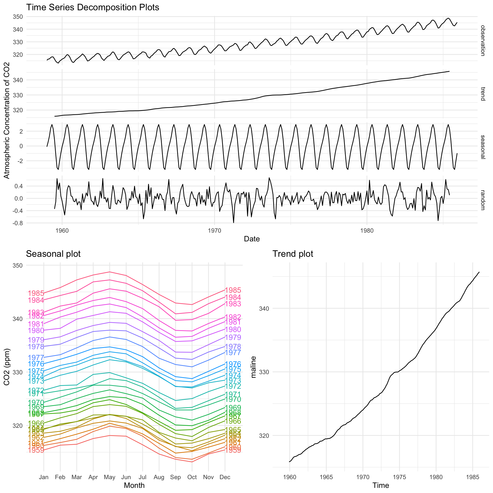
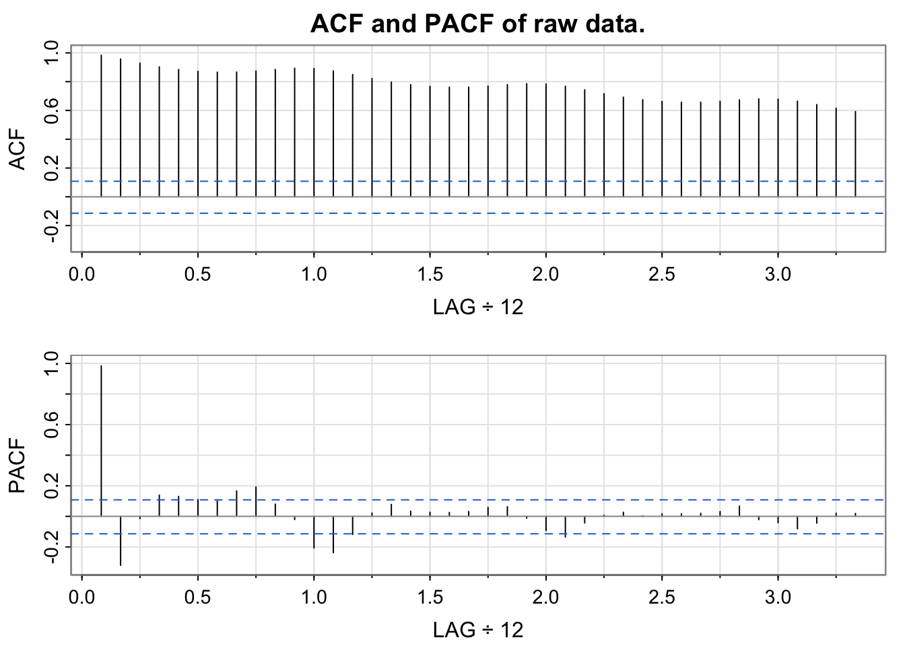
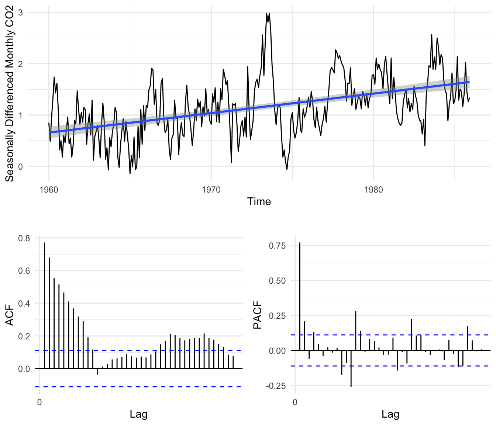
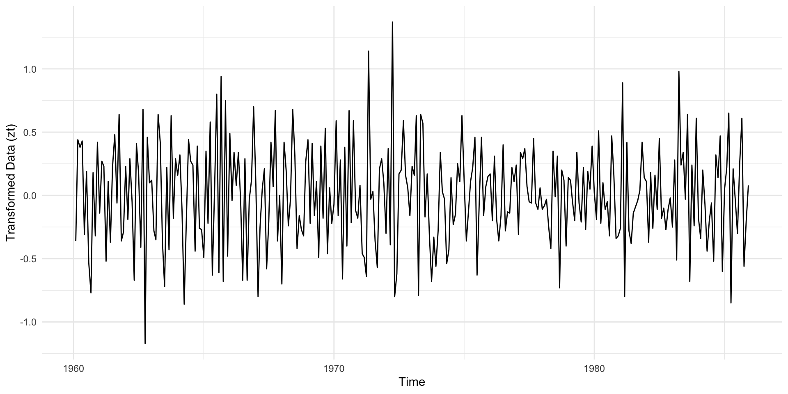
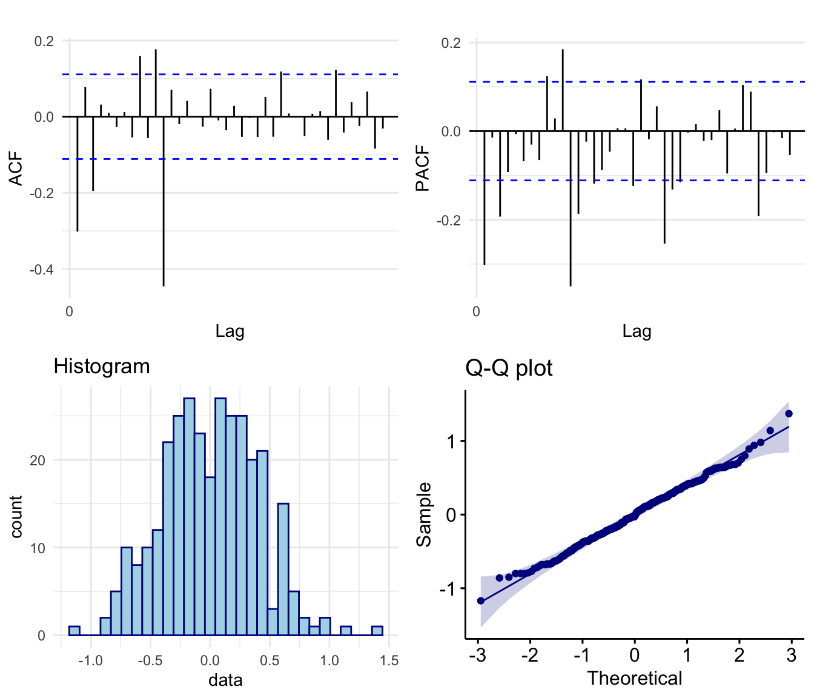

Abstract:
In this report we aim to select and fit an appropriate Seasonal Autoregressive Integrated Moving Average (SARIMA) model in order to produce accuruate five year ahead forecasts of atmospheric CO2 levels above Mauna Loa, Hawaii. We investigate the underlying properties of the time series data, the suitability of SARIMA models, and whether the forecasts they produce accurately capture future observations. Throughout the project we implement various univariate time series analysis techniques including exploratory analysis, model selection procedures based on the adjusted Akaike Information Criteria, diagnostic checking, residual analysis and spectral analysis. Our first choice \(\text{SARIMA}(0,1,3)(0,1,1)_{12}\) model performed well, producing approximately Gaussian WN residuals and accurate forecasts with confidence intervals capturing the true observed future values of the time series.
Introduction
Several geophysical time series contain seasonal variation with one key example being carbon dioxide (CO\(_2\)) atmospheric concentration which typically is known to have annual seasonality - largely due to plant photosynthesis and respiration - superimposed upon an increasing trend caused primarily by human CO\(_2\) production. In this project we examine a data set consisting of monthly measurements of atmospheric CO\(_2\) above Mauna Lao, Hawaii in the 32 year period from between 1959 and 1990 with the aim of producing accurate forecasts - in our case a 5 year ahead forecast - by fitting a suitable model from the SARIMA model family. We use a variety of time series analysis including exploratory analysis (time series decomposition, stationarity transformations, inspecting series autocorrelations and partial autocorrelations, tests for normality, stationarity and autocorrelation), SARIMA fitting and model selection (checking for stationarity and invertibility, coefficient significance testing, performance criteria) and residual analysis (portmanteau tests, residual WN tests, model spectral decomposition). We find that the \(\text{SARIMA}(0,1,3)(0,1,1)_{12}\) model is our optimal model candidate and our subsequent residual analysis, forecasting and spectral decomposition indicates that our model produces accurate forecasts which captured the future true observations of the time series. Our analysis was performed using the programming language R and a full breakdown of our code can be found in the corresponding GitHub repository.
Data
Data Description
Our data set contains monthly measurements of atmospheric carbon dioxide above Mauna Loa, Hawaii from January 1959 to December 1990, measured in parts per million (ppm). The data was originally collected from the Scripps Institute of Oceanography, La Jolla, California and made readily available through the tsdlpackage developed by Rob Hyndman, Professor of Statistics at Monash University, Australia. The data set initially contained missing values which were subsequently filled in by linear interpolation. Our raw data series, labelled by \(x_t\), \(t = 1, ..., 384\) contains 384 observations.
Exploratory Analysis
We split our data into disjoint training and testing sets, with the latter containing the last 5 years of observed CO\(_2\) levels to be used to analyse the performance of the foreacsts produced by our chosen final model. Our training data set contains 324 observations whilst our testing data set contains 60. Using the training data we produce a time series plot, shown below in Figure 1.
We see clear evidence of both an increasing polynomial trend and a seasonal component (with a 12 month period) implying that our raw data is non-stationary. The variance of our data appears constant and there is no evidence of sharp changes in behaviour indicating that a SARIMA model will likely suit our data well. We decompose the time series in Figure 2 below to provide a clearer picture of the seasonal and trend components and since we observe no evidence of heteroscedastic behaviour in the residuals we opt not to transform our data.

We produce a plot of the autocorrelation function (ACF) of the data, shown below in Figure 3, from which we see highly significant autocorrelations for all lags up to 40 which slowly decay and show seasonality.

We attempt to obtain stationarity by differencing, first with lag 12 to remove the seasonal trend. Mathematically this transformation is denoted:
\[\begin{equation}\tag{1} y_t = x_t−x_{t−12} = (1−B^{12})x_t = ∇_{12}x_t, \end{equation}\]
where \(y_t\) is our seasonally differenced data series and B is the back-shift operator whereby \(B^kx_t = x_{t−k}\). A time series plot of our differenced data is shown below in Figure 4 along with a trend line, from which we can see that all evidence of a seasonal trend has been removed but the data appears to still be non-stationary as a linear trend is still present. Alongside we include the ACF plot of our seasonally differenced data from which we see the decaying autocorrelation typical of data with a polynomial trend.

We therefore difference again with lag 1 to remove the linear trend from in the data, denoted mathematically by:
\[\begin{equation}\tag{2} u_t = y_t−y_{t−1} = (1−B)y_t = (1−B)(1−B^{12})x_t = ∇_1∇_{12}x_t, \end{equation}\]
where \(u_t\) is our twice differenced data. We produce another time series plot of our twice differenced data below in Figure 5.

Our twice differenced data now appears stationary with no evidence of seasonality or polynomial trends with a stable variance in time. In Table 1 below we see that each transformation lowered the variance of our data.
| Transformation | Variance |
|---|---|
| None | 86.0367259 |
| Differenced lag 12 | 0.3449074 |
| Differenced lag 12 and lag 1 | 0.1577327 |
In Figure 6 we see that the ACF of our twice differenced data shows no evidence of polynomial or seasonal trends. Further both the histogram and Q-Q plot shows that the empirical distribution of our data is symmetric and approximately Gaussian.

Finally, in Table 2 we see the p-values for both the Augmented Dickey–Fuller (ADF) t-statistic test (which examines whether the series has a unit root where a series with a trend line will have a unit root and result in a large p-value); and the Kwiatkowski-Phillips-Schmidt-Shin (KPSS) test (which tests the null hypothesis of trend stationarity where a low p-value will indicate a signal that is not trend stationary, has a unit root), both of which concluded that the twice differenced data is trend stationary.
| Test | Null | pValue | Conclusion |
|---|---|---|---|
| ADF Test | Process has a unit root and therefore a trend. | <0.01 | Data is stationary |
| KPSS Test | Process is stationary | >0.1 | Data is stationary |
Model Fitting
Parameter Selection
When considering a potential SARIMA model we are required to select possible values for the 7 parameters \(p\), \(d\), \(q\), \(P\), \(D\), \(Q\) and \(s\). Since we differenced our data with lag 1 once and with lag 12 once to obtain stationarity we have the parameters \(d=1\), \(D=1\) and \(s = 12\). To determine a potential range of values of the remaining parameters (AR parameters \(p\), \(P\) and MA parameters \(q\), \(Q\)) we examine both the ACF and PACF plots of the differenced data, shown above in Figure 6.
To determine an upper bound for the AR term \(p\) range we look at the PACF and see that we have significant partial-autocorrelation spikes at lags 1 and 3 indicating we may require up to \(p= 3\). We also note there are significant spikes at lags 9 and 11 although these are likely interactions with seasonal components to be considered later. To determine an upper bound for the MA term \(q\) range we look at the ACF and see that we have significant autocorrelation spikes at lags 1 and 3, indicating we may require up to \(q= 3\). Similarly, we also see significant spikes at lags 9 and 11, likely due to interactions with seasonal components.
Now considering seasonal AR terms we again turn to the PACF, this time noting that we have significant partial-autocorrelation at lags 12,24 and 36 indicating that we may require a seasonal AR parameter up to \(P= 3\). Finally, to determine an upper bound for the seasonal MA term Q range we note from the ACF plot that we have significant autocorrelation at lag 12 only, indicating the we likely require a seasonal MA parameter of \(Q= 1\).
We proceed to select the two models using a procedure whereby we systematically fit, evaluate and compare models using the Akaike information criterion (adjusted for small sample sizes) - denoted AICc. Earlier we determined that at most our model with have up to \(p= 3\), \(q= 3\), \(P= 3\) and \(Q= 1\) however, since the AICc punishes models with large numbers of parameters our approach to selecting an optimal model will be to start with the simplest models and add parameters with the aim of minimizing the AICc.
| Model | ar1 | ar2 | ar3 | ma1 | ma2 | ma3 | sar1 | sma1 | AICc |
|---|---|---|---|---|---|---|---|---|---|
| SARIMA(0,1,1)(0,1,0)12 | -0.344*** | 279.55 | |||||||
| SARIMA(0,1,0)(0,1,1)12 | -0.890*** | 154.53 | |||||||
| SARIMA(0,1,2)(0,1,0)12 | -0.346*** | -0.047 | 280.87 | ||||||
| SARIMA(0,1,1)(0,1,1)12 | -0.353*** | -0.841*** | 123.84 | ||||||
| SARIMA(0,1,3)(0,1,0)12 | -0.325*** | 0.013 | -0.217*** | 270.05 | |||||
| SARIMA(0,1,2)(0,1,1)12 | -0.354*** | -0.046 | -0.839*** | 125.30 | |||||
| SARIMA(0,1,3)(0,1,1)12 | -0.356*** | 0.004 | -0.157** | -0.838*** | 119.57 | ||||
| SARIMA(0,1,3)(0,1,0)12 (MA2=0) | -0.322*** | 0 | -0.214*** | 268.05 | |||||
| SARIMA(0,1,3)(0,1,1)12 (MA2=0) | -0.355*** | 0 | -0.156** | -0.838*** | 117.51 | ||||
| SARIMA(1,1,1)(0,1,1)12 | 0.345* | -0.675*** | -0.839*** | 123.37 | |||||
| SARIMA(0,1,1)(1,1,1)12 | -0.357*** | -0.031 | -0.831*** | 125.69 | |||||
| SARIMA(1,1,3)(0,1,1)12 (MA2=0) | 0.026 | -0.377** | 0 | -0.152** | -0.839*** | 119.55 | |||
| SARIMA(3,1,3)(0,1,1)12 (MA2=0) | 0.660 | 0.235 | -0.269 | -1.007* | 0 | 0.193 | -0.846*** | 123.1 | |
| SARIMA(3,1,1)(0,1,1)12 | 0.371* | 0.139. | -0.103 | -0.722*** | -0.841*** | 121.15 | |||
| SARIMA(3,1,1)(0,1,1)12 (AR1=AR2=0) | 0 | 0 | -0.139* | -0.347*** | -1.196*** | 119.96 |
Pure Moving Average Models
We begin by fixing our AR parameters \(p= 0\) and \(P= 0\) and determine the optimal pure Moving Average (MA) model. From our ACF and PACF plots we determined that our model should include up to \(q= 3\) MA terms and \(Q= 1\) seasonal MA terms. We proceed to fit various models with the results of the fitting procedure for our top performing models, shown below in Table 4.
| Model | AIC | AICc | BIC |
|---|---|---|---|
| SARIMA(0,1,3)(0,1,1)12 | 119.38 | 119.57 | 138.08 |
| SARIMA(0,1,3)(0,1,1)12 (MA2=0) | 117.38 | 117.51 | 132.34 |
From Table 4 we see that the SARIMA(0,1,3)(0,1,1)12 model obtained an AICc of 119.57 and that of our 4 fitted coefficients, the MA(2) parameter is insignificant - since the confidence interval contains 0. Therefore, we fix this term to 0 and refit our model. Our adjustment was successful with our new model achieving a lower AICc score of 117.51 and significant coefficients making this as our top performing pure MA model.
Considering Autoregressive Terms
We consider whether the introduction of autoregressive terms improves model performance per the AICc - namely whether the introduction of additional autoregressive terms improve performance enough that it outweighs the penalty from the AICc. We again consider a selection of models containing AR terms and show the fitting procedure results of our top two candidates in Table 5 below.
| Model | AIC | AICc | BIC |
|---|---|---|---|
| SARIMA(1,1,1)(0,1,1)12 | 123.24 | 123.37 | 138.20 |
| SARIMA(3,1,1)(0,1,1)12 (AR1=AR2=0) | 119.83 | 119.96 | 134.79 |
We found that the addition of seasonal AR terms typically decreased our models AICc and rarely had significant coefficients. From Table 5 we see that the SARIMA(1,1,1)(0,1,1)12 model performed reasonably well, with all fitted coefficients being significant and achieving an AICc of 123.37. Furthermore, from Table 5 we also see that a potential candidate is the SARIMA(3,1,1)(0,1,1)12 model with fixed zero AR(1) and AR(2) coefficients. This model again has all significant coefficients with an AICc of 119.96, making it the second best performing model overall per the AICc, however this model is not a viable candidate as the absolute value of the seasonal MA coefficient is greater than 1. Hence select the SARIMA(1,1,1)(0,1,1)12 model as our second candidate and proceed to confirming stationarity and invertibility.
Final Model
The equations for our selected models are therefore:
\(\nabla_{1}\nabla_{12}X_t = (1-0.354998_{(0.053140)}B-0.155974_{(0.052126)}B^3)(1-0.838438_{(0.035989)}B^{12})Z_t,\)
\(\nabla_1\nabla_{12}(1-0.344624_{(0.151353)}B)X_t=(1-0.675336_{(0.123186)}B)(1-0.839105_{(0.035565)}B^{12})Z_t\)
where \(Z_t\) is White Noise (WN) with \(\mathbb{E}Z_t=0\) with \(\text{Var}(Z_t)=\hat{\sigma}_Z^2 =0.08431\) and \(\hat{\sigma}_Z^2=0.08583\) respectively.
Model (1) is pure moving average so it is always stationary. Furthermore, from plot 1 in Figure 8 below we see that all MA roots lie outside the unit circle and since \(|\Theta_1|< 1\) we have that the model is invertible. Model (B) is invertible since \(|\theta_1|< 1\) and \(|\Theta_1|< 1\) and the model is stationary since \(|\phi_1|< 1\).